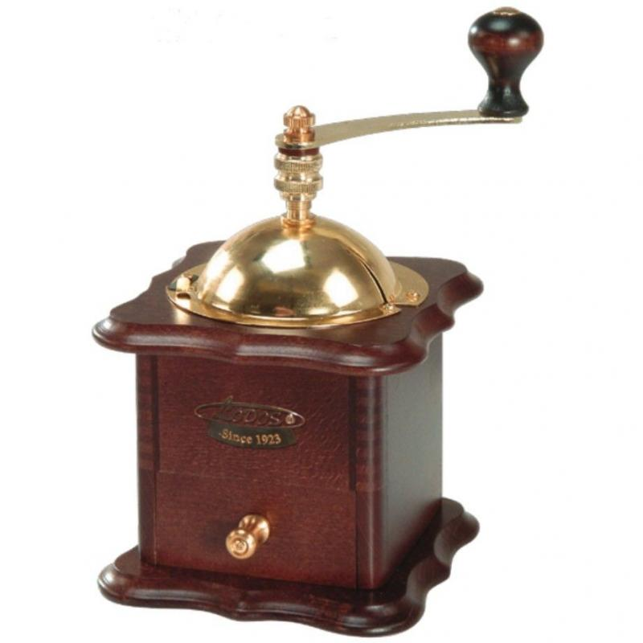

Kézi kávédaráló
A frissen őrölt kávé méginkább étvágygerjesztő és aromás! Az egyre jobban digitalizálódó világban mindenkit meghatároz a napi kévé adagja. Ezt az adagot ma már mindenféle színes és villogó kávé gépek készítik el nekünk, de gondolgozott már azon, hogy hogyan készült a gépek előtt? A kézi kávédarálók között is van különbség, formában, színben, stílusban.

Ez pédául egy régebbi kiadás
Ez itt meg egy újabb
Persze stílusosat is találsz ha az tetszik
|
Elérhetőségeink: Telefon: 70 167 5284 Email: pelda@gmail.com Facebook: @atevelemenyed |
Kérdés/vélemény írása: |